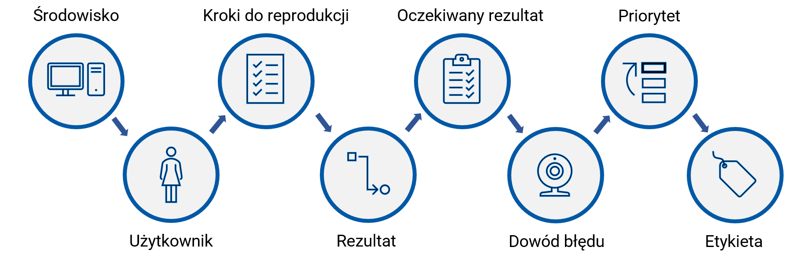

Po zakończeniu procesów testowych oraz wykryciu i naprawie usterek należy jeszcze wykonać retest potwierdzający
sprawne działanie programu. Tym właśnie jest testowanie regresywne. Polega ono przede wszystkim na ponownym sprawdzeniu oprogramowania
pod kątem znalezienia ukrytych wad i błędów. Testy potwierdzające mogą być wykonywane dla wszystkich typów testów i poziomów testowania.
Co więcej, ze względu na to, że wymagają powtarzalności, można je łatwo zautomatyzować.
Testy regresywne można przeprowadzać zarówno na wszystkich poziomach testów,
jak i dla wszystkich ich typów (funkcjonalnych, niefunkcjonalnych, strukturalnych).
